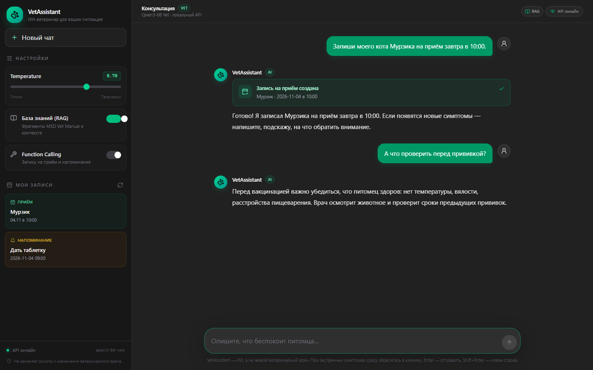

Ответы по базе знаний
RAG находит релевантные фрагменты MSD Vet Manual и использует их в ответе. База собирается из TXT и PDF и хранится в ChromaDB.
AI-ветеринарный ассистент
Опишите симптом или задайте вопрос: ассистент опирается на MSD Vet Manual, помнит контекст беседы, ведёт записи на приём и напоминания. Модель работает на нашем сервере, без внешних LLM-API.
Регистрация по запросу: создадим аккаунт вручную и ответим на email.

Возможности
Не просто чат с моделью: ассистент работает с ветеринарной базой знаний, ведёт историю и выполняет действия внутри приложения.
RAG находит релевантные фрагменты MSD Vet Manual и использует их в ответе. База собирается из TXT и PDF и хранится в ChromaDB.
Можно уточнять симптомы, возвращаться к предыдущим вопросам и сравнивать состояние питомца — ассистент учитывает историю диалога.
Попросите записать питомца — ассистент создаст запись с датой и временем и покажет её в боковой панели. Это запись внутри приложения, а не бронь в клинике.
Ассистент сохраняет напоминания о лекарствах и процедурах. Они привязаны к пользователю и видны только ему.
Один ассистент в браузере и в Telegram-боте: общая история, стриминг ответов и те же действия с записями и напоминаниями.
Промпт и проверки удерживают модель от назначения опасных препаратов и дозировок. При тревожных симптомах ассистент направляет в клинику.
Безопасность
VetAssistant — информационный помощник. Он объясняет риски и подсказывает, когда нужно срочно ехать в клинику, но не ставит диагноз по фотографии или описанию.
Как работает
Три шага, которые помогают собрать информацию и не потерять важное до визита к врачу.
Расскажите, что беспокоит: вид животного, возраст, симптомы, как давно началось. Можно писать обычным языком.
Он задаст вопросы, найдёт подходящие фрагменты в MSD Vet Manual и объяснит, какие признаки важны.
Что наблюдать, когда ехать в клинику, какие вопросы задать врачу. При необходимости — запись и напоминание.
Как устроено
Qwen3-8B после QLoRA-дообучения работает на CPU через llama.cpp. RAG подключает MSD Vet Manual, а агентный цикл выполняет записи и напоминания.
Модель и база знаний работают на нашем сервере. Запросы не отправляются в OpenAI, Anthropic или другие облачные LLM-сервисы. Для работы нужен только доступ к приложению.
PetQA-Bench — внутренний синтетический бенчмарк с оценкой LLM-Judge; это не клиническое исследование.
Вопросы
Нет. Ассистент помогает разобраться в симптомах и подготовиться к визиту, но не ставит диагноз, не назначает лекарства и не заменяет очный осмотр.
Для кошек и собак. Сельскохозяйственные и экзотические животные не входят в область применения.
Веб-версия работает на нашем сервере, модель не обращается к внешним LLM-API. При использовании Telegram сообщения обрабатываются Telegram по его правилам.
Регистрация закрыта. Оставьте заявку на странице приложения — мы создадим аккаунт вручную и ответим на указанный email.
Нужен доступ к нашему серверу, поэтому интернет требуется. При этом модель не обращается к внешним LLM-сервисам.
Доступ
Приложение работает на app.ai-pets.ru. Регистрация по запросу: оставьте email — мы создадим аккаунт вручную и ответим.
Если питомцу плохо, не ждите ответа ассистента — обратитесь в ветеринарную клинику.